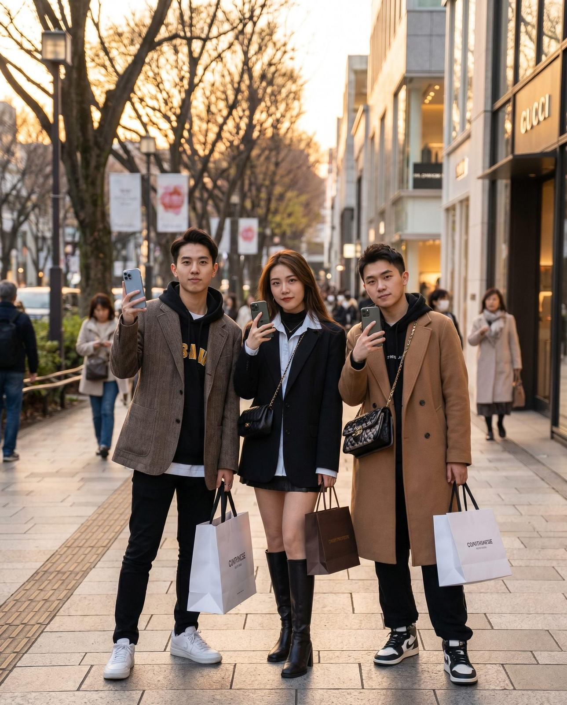

投稿本数だけで提案している
検索キーワード、保存率、KOC、広告、問い合わせ導線の話がない場合、単なる投稿代行になりやすいです。
Agency Selection Guide
小紅書代理店を選ぶ時に見るべきなのは、安い月額費用だけではありません。検索される投稿設計、KOL/KOC、広告、撮影、レポート、予約・来店導線まで一貫して確認する必要があります。
Comparison Points
小紅書は「投稿代行」だけでは成果が出にくい媒体です。中国ユーザーが検索し、保存し、比較し、問い合わせる流れを作れる会社かを確認します。
ターゲット、検索キーワード、競合、投稿テーマを初期設計してくれるか。
媒体運用前に、業種別の検索意図と来店・予約導線を設計します。
日本語直訳ではなく、中国ユーザーに自然な表現になっているか。
ネイティブ目線で、保存・比較される表現へ調整します。
写真、短尺動画、店内・商品素材、LPまで制作できるか。
投稿だけでなく、広告・LP・大衆点評にも使える素材を設計します。
フォロワー数だけでなく、商材との相性や投稿後の活用まで見ているか。
KOC投稿を検索資産として残し、広告・店舗導線と組み合わせます。
閲覧数だけでなく、保存率、検索流入、問い合わせ導線まで見ているか。
月次で投稿テーマ、クリエイティブ、導線を改善します。



Warning Signs
低価格そのものが悪いわけではありません。ただし、成果に必要な作業が別費用や対象外になっている場合は、結果的に高くなることがあります。
検索キーワード、保存率、KOC、広告、問い合わせ導線の話がない場合、単なる投稿代行になりやすいです。
直訳投稿は違和感が出やすく、ブランドや店舗の魅力が伝わりません。ネイティブチェック体制を確認します。
インフルエンサー実費、キャスティング費、投稿管理費、二次利用範囲を分けて確認する必要があります。
閲覧数だけでは判断できません。保存、検索語、コメント、問い合わせ、来店導線まで見られるかが重要です。
Agency Types
小紅書運用会社は、投稿代行型、広告運用型、KOLキャスティング型、インバウンド導線設計型に分かれます。目的に合わない会社を選ぶと、費用をかけても成果につながりにくくなります。
Decision Matrix
月額運用、初期設計、撮影、広告、KOL/KOC費用を分けて確認します。
Next Reading
候補会社を比較する前に、費用、支援範囲、媒体連携、事例を確認すると発注条件を整理しやすくなります。
FAQ
中国語投稿の品質だけでなく、検索キーワード設計、KOL/KOC施策、撮影・動画制作、広告運用、月次レポート、問い合わせ・来店導線まで見られるかを確認します。
費用だけで選ぶと、撮影、広告費、KOC手配、コメント対応、レポート改善などが別費用になり、成果に必要な範囲が抜けることがあります。月額内の作業範囲を必ず比較してください。
はい。小紅書のほか、大衆点評、抖音、WeChat、KOL/KOC施策、中国語LP制作まで、業種と目的に合わせて組み合わせた導線設計が可能です。